Week 2: 2D Design & Cutting
This week's assignment was the creation of a press-fit construction kit. Examples include simple polygons, like squares, circles, and triangles, with notches so the pieces can fit into each other. I didn't have a specific goal in mind, so I came up with a piece based off of a rectangle.
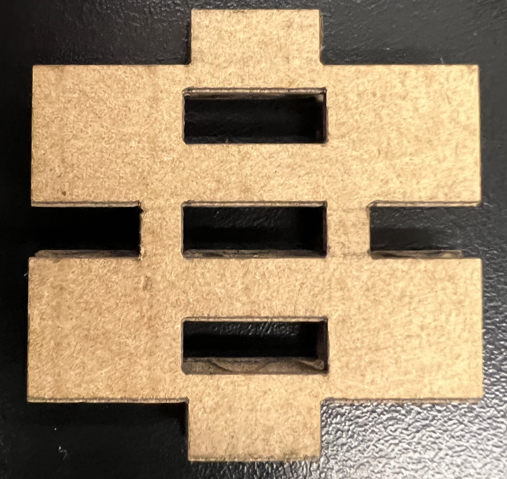This asymmetric design gives constructions a sense of directionality, with orthogonality being generated through either the inset rectangular holes or the notches on either side. For the vocabulary I used when designing this component, nubs are the pieces on the top and bottom that pop into the insets, the rectangular holes within the shape. Finally, there are notches cut into the left and right of the shape which can attach to each other. In general, nubs attach to insets and notches attach to notches. With that, I'll explain how I designed this piece digitally and then produced a physical product.
First, I had to design the piece in digital software. I used Autodesk's Fusion 360, a hierarchy-based parametric CAD (Computer-Aided Design) software. After creating a new project, I selected Create Sketch under the Create dropdown menu. Starting with a square (Create > Rectangle > Center Rectangle) with parameter Side_Length set to 40 mm, I created construction lines across the horizontal and vertical midpoints. By offsetting (hotkey O), mirroring, and creating custom parameters (Modify > Change Parameters > User Parameters > +), I was able to create the design I had in my head. The features I was aiming for were 2 nubs, 2 notches, and 3 insets. Below are the various lines I used to define the positions and sizes of these features, all defined parametrically because I had no clue what would work.
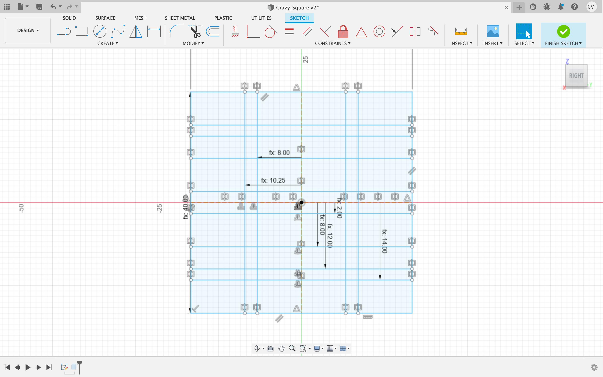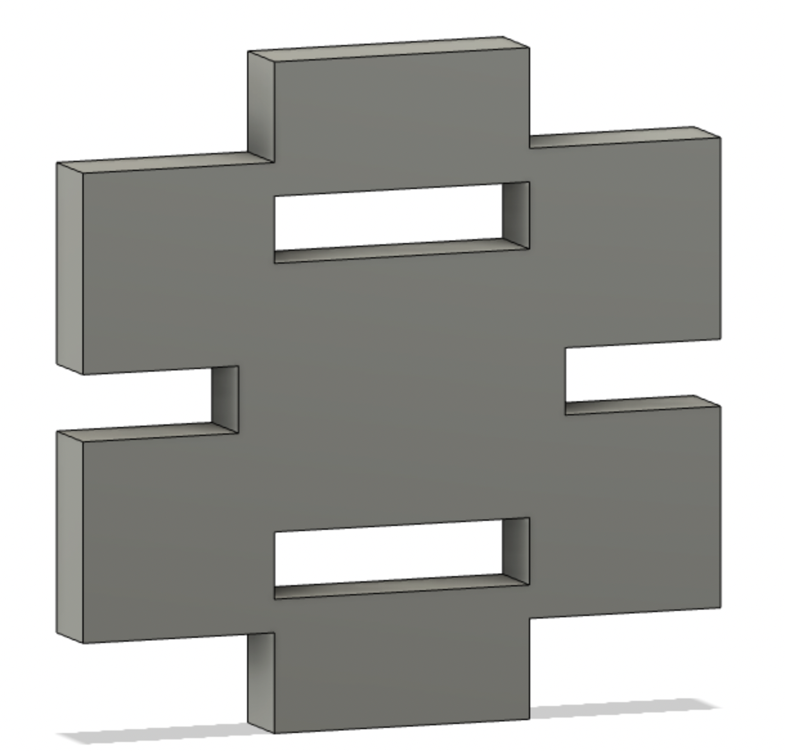
I named this file Crazy_Square. The parameters for Crazy_Square are shown below.
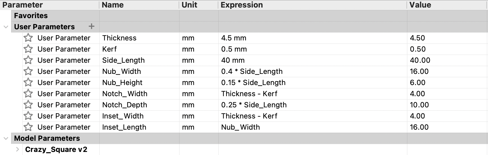With this 2D design, I had to prepare it for cutting. I hit Finish Sketch in the top right corner, then hit E to extrude the faces I wanted for the 3D shape. Once this was finished, the shape was projected back into 2D with projection (P) onto a plane. By right-clicking the sketch under the hierarchy menu on the left, I had the option to "Save as DXF." My file was ready to export to the laser cutter.
I imported the file to LightBurn and started the Thunder Laser Nova24 at speed 30 and power 60. I printed only 2 components my first round to see how they fit. The nub was a little big, as well as the insets. I decreased the size of these and added a third central inset.
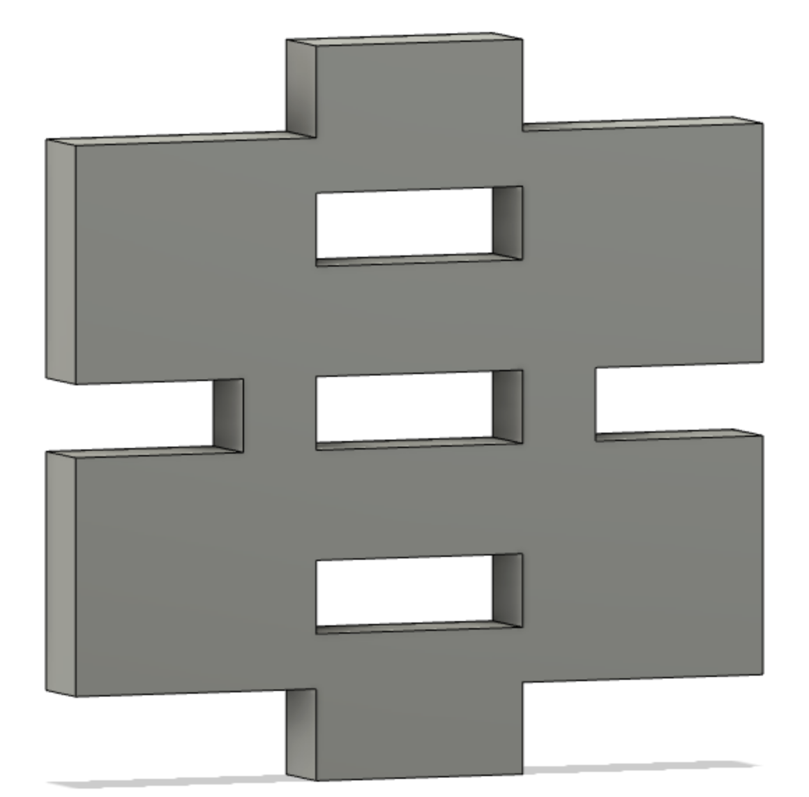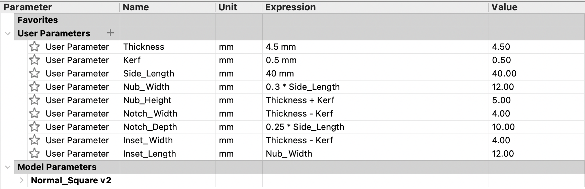
I was happy with the variety of shapes I could produce out of the little components I made. Here are a few!
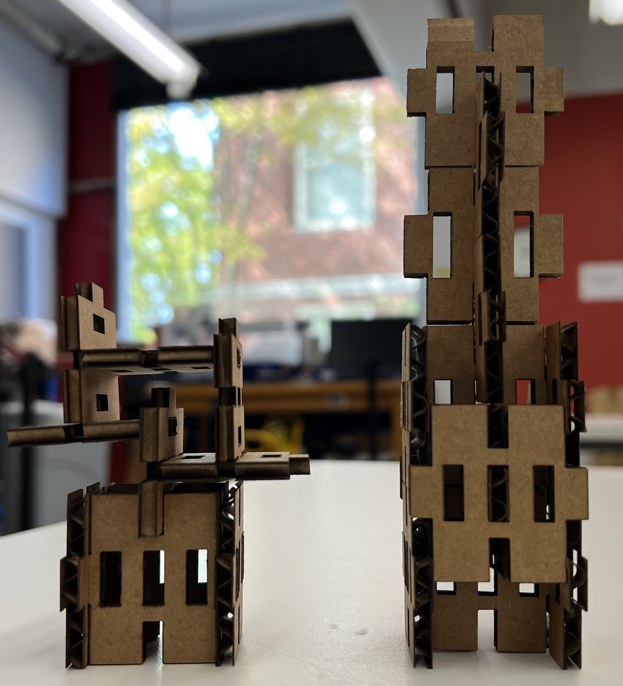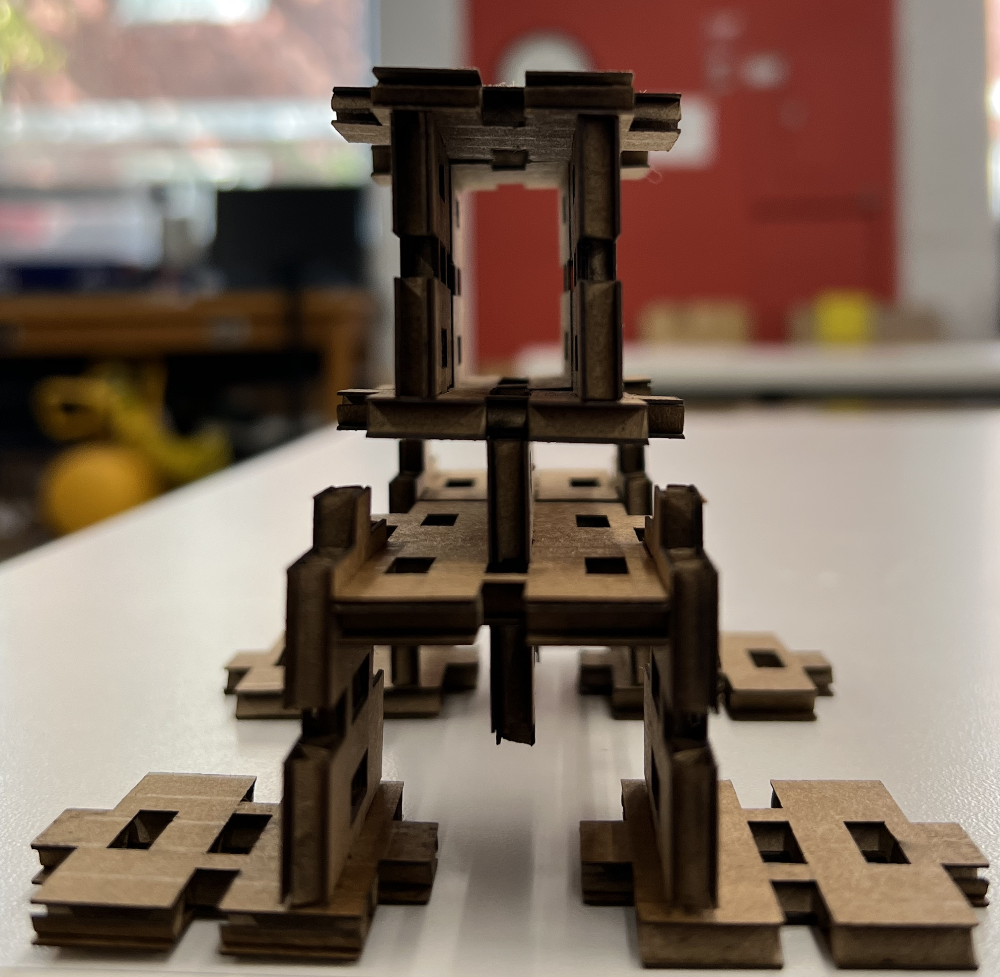
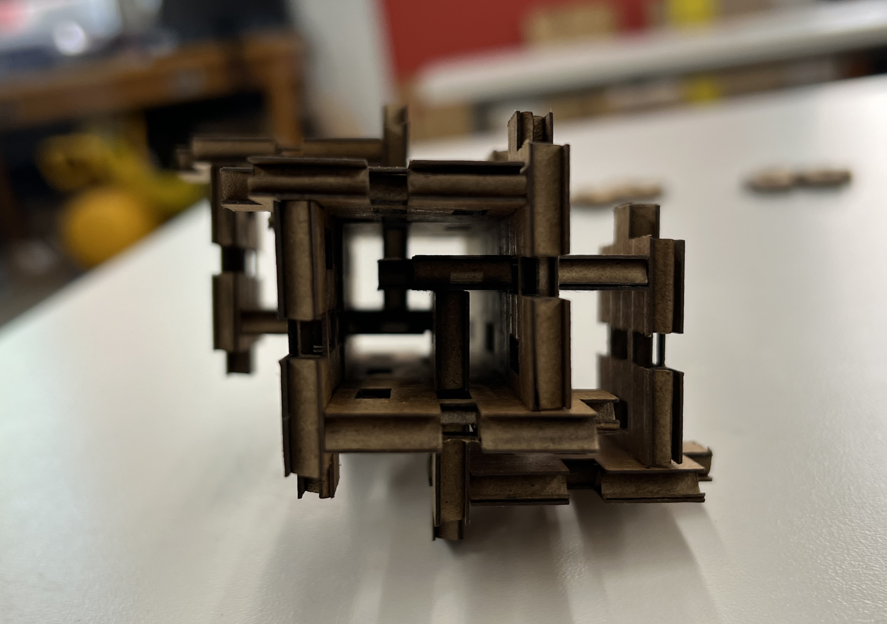
After getting comfortable with the laser cutter, I tried some other small projects. I modified an octopus image to make a vinyl laptop sticker, as well as parametrically modeled my water bottle and floor lamp in Blender. I'm still in the process of getting comfortable with 3D in Fusion. I hope to expand on the lamp model in the future, but that's for another week!
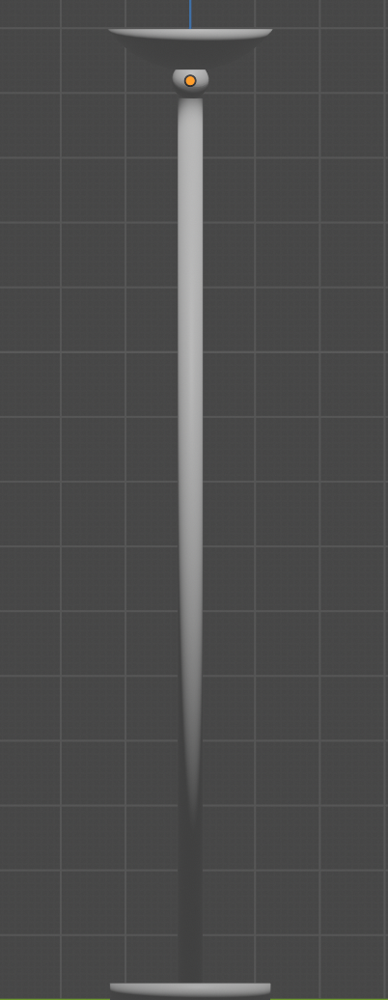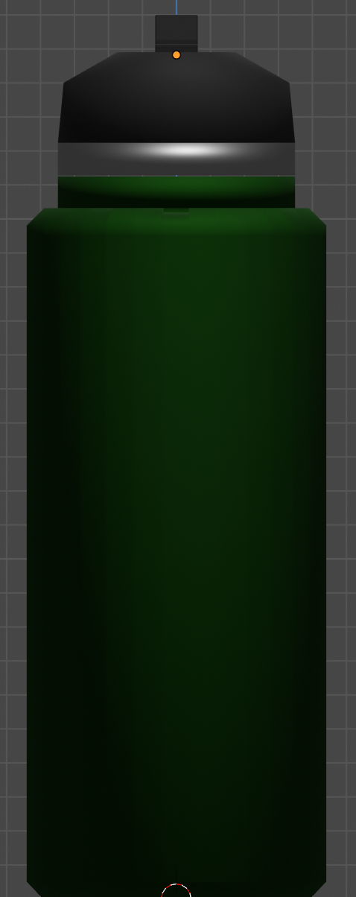For the lamp, I created a cylinder for the base, a long cylinder for the main stand, a sphere between the stand and the top, and a sphere for the top. I used a cube with a Boolean difference modifier to subtract from the top sphere to create an open dome, based on the measurements I'd taken comparing the height of the dome to its diameter.
The bottle was also composed of cylinders, although the main component is beveled. The top cylinder is the bottle cap with a rectangular sipper sort of thing. The model is a little jank up there, but it works.